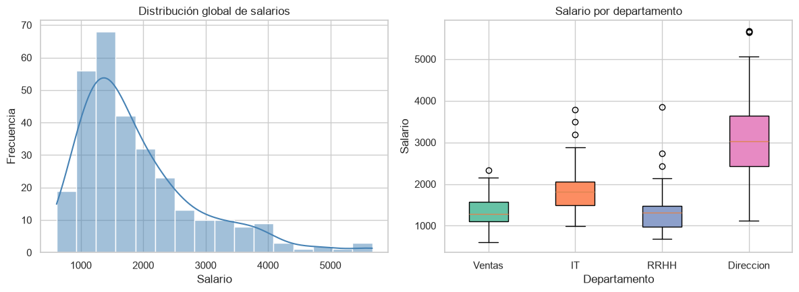

Para trabajar en tu ordenador, descarga el repositorio completo: el cuaderno necesita la librería src/stats_toolkit y los datos del curso. Las instrucciones de instalación están en el archivo README.md.
La celda siguiente solo actúa en Google Colab: descarga el repositorio del curso, instala las bibliotecas que falten y se sitúa en la carpeta de este cuaderno. Si instala o actualiza alguna, te pedirá que reinicies la sesión y vuelvas a ejecutar el cuaderno. En tu ordenador no hace nada.
Código
# Solo en Google Colab: descarga el repositorio del curso (stats_toolkit y datos),# instala las bibliotecas que falten y se sitúa en la carpeta de este cuaderno.# En otro entorno (tu ordenador, la web del curso) no hace nada.import osimport subprocessimport sysif"google.colab"in sys.modules:from importlib.metadata import PackageNotFoundError, version repo ="/content/Curso-de-Estadistica-Basica"ifnot os.path.isdir(repo): subprocess.run(["git", "clone", "--depth", "1","https://github.com/JulioUQ/Curso-de-Estadistica-Basica.git", repo], check=True)# Bibliotecas de cálculo de requirements.txt (Jupyter ya viene con Colab).withopen(f"{repo}/requirements.txt", encoding="utf-8") as f: requisitos = [linea.split("#")[0].strip() for linea in f] requisitos = [r for r in requisitos if r and r notin ("jupyter", "ipykernel", "nbclient", "nbformat")] nombres = [r.split(">=")[0] for r in requisitos]def versiones(): res = {}for n in nombres:try: res[n] = version(n)except PackageNotFoundError: res[n] =Nonereturn res antes = versiones() subprocess.run([sys.executable, "-m", "pip", "install", "-q", *requisitos], check=True) cambiadas = [n for n, v in versiones().items() if v != antes[n]]if cambiadas:print("Se han instalado o actualizado:", ", ".join(cambiadas))print("Reinicia la sesión (menú «Entorno de ejecución») y vuelve a ejecutar el cuaderno.") os.chdir(f"{repo}/notebooks/01_estadistica_descriptiva")
Código
import syssys.path.append("../../src") # permite importar stats_toolkit desde notebooks/import numpy as npimport pandas as pdimport matplotlib.pyplot as pltimport seaborn as snsfrom scipy import statsfrom stats_toolkit import descriptive as descsns.set_theme(style="whitegrid")plt.rcParams["figure.figsize"] = (8, 4.5) # tamaño común de las figuras de una sola gráficanp.random.seed(42)
3.1 Generación del dataset simulado
Simulamos 300 empleados distribuidos en 4 departamentos. Los salarios siguen una distribución log-normal (común en datos salariales reales: asimétrica hacia la derecha, con pocos sueldos muy altos).
Observación: los tres métodos coinciden, como es de esperar. La ventaja de stats_toolkit es que centraliza la lógica y evita repetir código en cada notebook del curso.
3.3.1 ¿Y la moda?
La moda es el valor que más se repite. Antes de calcularla, comprobemos cuántas veces aparece cada salario:
Los 300 salarios son todos distintos: como el salario es una variable continua y se registra en céntimos, es muy raro que dos coincidan exactamente. Ningún salario es “el más habitual”. Y si dos coincidieran por casualidad al redondear, ese salario sería técnicamente la moda, pero seguiría sin describir dónde se concentran los datos. Veamos qué responde cada herramienta ante esta situación:
Código
moda_scipy = stats.mode(salarios, keepdims=False).modemodas_pandas = df["salario"].mode()print(f"SciPy (stats.mode): {moda_scipy:.2f} (salario mínimo: {salarios.min():.2f})")print(f"pandas (Series.mode): {len(modas_pandas)} valores, uno por cada salario")print(f"stats_toolkit (desc.modes): {desc.modes(salarios)}")print(f"stats_toolkit (central_tendency): {resultado_desc['mode']}")
SciPy (stats.mode): 610.38 (salario mínimo: 610.38)
pandas (Series.mode): 300 valores, uno por cada salario
stats_toolkit (desc.modes): []
stats_toolkit (central_tendency): nan
Las tres herramientas aplican convenciones distintas ante un empate en la frecuencia máxima (aquí, los 300 salarios empatan con frecuencia 1):
SciPy devuelve un único valor y, en la práctica, elige el más pequeño. Por eso obtenemos el salario mínimo, que no es un salario habitual sino el extremo inferior de la distribución.
pandas devuelve todos los valores empatados: 300 “modas”.
stats_toolkit sigue la convención del curso: si todos los valores tienen la misma frecuencia, no hay moda destacada. desc.modes() devuelve una lista vacía y central_tendency() indica nan en la clave mode.
Ninguna de las tres está mal programada, pero ninguna nos dice dónde se concentran los salarios. Para eso, con datos continuos, se agrupa en intervalos y se busca la clase modal (lo haremos en la sección «Visualización de la distribución», junto al histograma).
3.3.2 Moda única, varias modas y ninguna
La moda resulta más útil con variables discretas o categóricas, donde los valores sí se repiten. Comparamos desc.modes() con Series.mode() de pandas en unos ejemplos sencillos:
En el primer caso el 5 aparece tres veces y es la única moda.
En el segundo, 1 y 3 empatan en la frecuencia máxima y superan al resto: la distribución es bimodal y ambas herramientas coinciden.
En los dos últimos, todos los valores aparecen el mismo número de veces (cada departamento tiene 75 empleados). Según la convención del curso no hay moda destacada, mientras que pandas considera modas a todos los valores. Es una diferencia de convención, no un error de ninguna de las dos.
3.4 Medidas de dispersión
Comparamos la dispersión salarial entre departamentos usando el coeficiente de variación, que nos permite comparar variabilidad relativa aunque los promedios sean distintos.
Un histograma y un boxplot revelan lo que los números por sí solos no siempre muestran: la forma de la distribución y la presencia de outliers.
Código
fig, axes = plt.subplots(1, 2, figsize=(12, 4.5))sns.histplot(df["salario"], kde=True, ax=axes[0], color="steelblue")axes[0].set_title("Distribución global de salarios")axes[0].set_xlabel("Salario")axes[0].set_ylabel("Frecuencia")# Diagrama de caja con matplotlib (seaborn 0.13 emite avisos de obsolescencia)deptos =list(df["departamento"].unique())cajas = axes[1].boxplot([df.loc[df["departamento"] == d, "salario"] for d in deptos], tick_labels=deptos, patch_artist=True)for caja, color inzip(cajas["boxes"], sns.color_palette("Set2", len(deptos))): caja.set_facecolor(color)axes[1].set_title("Salario por departamento")axes[1].set_xlabel("Departamento")axes[1].set_ylabel("Salario")plt.tight_layout()plt.show()

3.5.1 Clase modal
El histograma muestra dónde se acumulan los salarios. La clase modal es el intervalo con más observaciones. La calculamos con los mismos intervalos que usa el histograma anterior (bins="auto", el valor por defecto de seaborn) y con dos agrupaciones alternativas:
Código
def clase_modal(datos, bordes):"""Intervalo [inicio, fin) con más observaciones y su frecuencia.""" conteos, bordes = np.histogram(datos, bins=bordes) k = conteos.argmax()return bordes[k], bordes[k +1], conteos[k]agrupaciones = {"Intervalos del histograma (bins='auto')": np.histogram_bin_edges(salarios, bins="auto"),"Intervalos de 250 € (desde 500 €)": np.arange(500, 6001, 250),"Intervalos de 500 € (desde 500 €)": np.arange(500, 6001, 500),}for nombre, bordes in agrupaciones.items(): inicio, fin, n = clase_modal(salarios, bordes)print(f"{nombre:40s} -> clase modal [{inicio:7.1f}, {fin:7.1f}) con {n} salarios")
Intervalos del histograma (bins='auto') -> clase modal [ 1243.0, 1559.3) con 68 salarios
Intervalos de 250 € (desde 500 €) -> clase modal [ 1250.0, 1500.0) con 53 salarios
Intervalos de 500 € (desde 500 €) -> clase modal [ 1000.0, 1500.0) con 96 salarios
Las tres agrupaciones coinciden en que los salarios se concentran alrededor de 1.250–1.500 €, que es donde está el pico del histograma: esa es la información que buscábamos con la moda. Pero la clase modal exacta depende de los intervalos elegidos: cambia su posición, su anchura y su frecuencia. Por eso, al informar de una clase modal hay que indicar siempre cómo se agruparon los datos.
Las frecuencias de las distintas agrupaciones (68, 53 y 96) no son directamente comparables, porque los intervalos tienen diferentes anchuras. Un intervalo más ancho puede reunir más salarios simplemente por abarcar un rango mayor. Dentro de cada agrupación, los intervalos tienen la misma anchura, por lo que sí podemos comparar sus frecuencias para identificar la clase modal.
3.6 Asimetría, curtosis y detección de outliers
Código
forma = desc.shape(salarios)print(f"Asimetría (skewness): {forma['skewness']:.3f}")print(f"Curtosis de exceso: {forma['kurtosis_excess']:.3f}")outliers = desc.detect_outliers(salarios)print(f"\nNúmero de outliers detectados (regla 1.5*IQR): {len(outliers)}")print(f"Valores: {np.round(outliers, 2)}")
Asimetría (skewness): 1.449
Curtosis de exceso: 2.161
Número de outliers detectados (regla 1.5*IQR): 11
Valores: [4132.7 5671.35 5062.6 5634.41 4063.25 4359.33 4864.52 4593.43 4225.74
4797.28 5652.82]
Interpretación: la asimetría es claramente positiva (cola larga hacia la derecha) y la curtosis de exceso también es positiva (colas más pesadas que las de una normal).
Ojo con el origen de esa forma: salarios reúne los cuatro departamentos, así que no procede de una única distribución log-normal, sino de una mezcla de cuatro log-normales con medias distintas. Cada una de ellas, con \(\sigma = 0{,}3\), tiene una asimetría teórica de solo 0,95; la asimetría global es mayor porque los salarios de Dirección, mucho más altos que los del resto, alargan la cola derecha del conjunto. De hecho, todos los valores atípicos detectados con la regla del RIC pertenecen a Dirección. Es un buen recordatorio de que, antes de interpretar la forma de una variable, conviene mirar si mezcla grupos distintos.
3.6.1 Momentos frente a estimadores corregidos
La teoría presenta dos versiones de cada medida: los coeficientes de momentos \(g_1\) y \(g_2\) y los estimadores corregidos \(G_1\) y \(G_2\), que son los que devuelven stats_toolkit y pandas. Calculamos ambas a partir de los momentos centrales y las comparamos con las dos bibliotecas.
Código
n =len(salarios)desv = salarios - salarios.mean()m2, m3, m4 = (np.mean(desv**k) for k in (2, 3, 4)) # momentos centrales# Coeficientes de momentos (sin corregir)g1 = m3 / m2**1.5g2 = m4 / m2**2-3# Estimadores corregidos (los que usa el curso)G1 = np.sqrt(n * (n -1)) / (n -2) * g1G2 = (n -1) / ((n -2) * (n -3)) * ((n +1) * g2 +6)comparacion = pd.DataFrame( {"g (momentos)": [g1, g2],"G (manual)": [G1, G2],"pandas": [df["salario"].skew(), df["salario"].kurt()],"stats_toolkit": [forma["skewness"], forma["kurtosis_excess"]], }, index=["Asimetría", "Curtosis de exceso"],)comparacion.round(4)
g (momentos)
G (manual)
pandas
stats_toolkit
Asimetría
1.4422
1.4494
1.4494
1.4494
Curtosis de exceso
2.1051
2.1609
2.1609
2.1609
Las tres últimas columnas coinciden: stats_toolkit y pandas calculan \(G_1\) y \(G_2\). Con \(n = 300\) la corrección apenas cambia el resultado (alrededor de un 0,5 % en la asimetría y un 3 % en la curtosis). Con muestras pequeñas la diferencia sería mucho mayor, y ambas medidas, sobre todo la curtosis, serían muy inestables.
3.7 Resumen completo con stats_toolkit.summary_statistics
En lugar de llamar función por función, summary_statistics devuelve todo en un solo diccionario — útil para generar reportes automáticos.
Cómo leer este resumen:'mode': nan no es un error. Indica que no hay una moda única: aquí, como vimos en la sección «¿Y la moda?», ningún salario se repite. Si hubiera varias modas, también aparecería nan; para verlas todas se usa desc.modes(). El resto de medidas (media, mediana, dispersión, forma y cinco números) se calculan con normalidad.
3.8 Ejercicio propuesto
Tu turno: usando stats_toolkit.descriptive, calcula el resumen estadístico completo solo para el departamento de Dirección y compáralo con el de Ventas. ¿Qué diferencias observas en el coeficiente de variación y en la asimetría? ¿Tiene sentido de negocio ese resultado? ¿Qué valor aparece como moda y por qué?
Intenta resolver los ejercicios antes de desplegar cada solución. Las soluciones se ejecutan con los mismos datos y semillas que el resto del cuaderno.
TipSolución del ejercicio 1
Filtramos los salarios de cada departamento y aplicamos summary_statistics() y modes() a ambos.
Código
salarios_direccion = df.loc[df["departamento"] =="Direccion", "salario"].valuessalarios_ventas = df.loc[df["departamento"] =="Ventas", "salario"].valuesfilas = {}for nombre, datos in [("Dirección", salarios_direccion), ("Ventas", salarios_ventas)]: centro = desc.central_tendency(datos) dispersion = desc.dispersion(datos) forma = desc.shape(datos) filas[nombre] = {"media": centro["mean"],"mediana": centro["median"],"desv. típica": dispersion["std"],"CV (%)": dispersion["cv_pct"],"asimetría (G1)": forma["skewness"],"curtosis (G2)": forma["kurtosis_excess"], }display(pd.DataFrame(filas).round(2))print("Modas en Dirección:", desc.modes(salarios_direccion))print("Modas en Ventas: ", desc.modes(salarios_ventas))
Dirección
Ventas
media
3110.42
1347.06
mediana
3021.99
1285.01
desv. típica
964.05
384.23
CV (%)
30.99
28.52
asimetría (G1)
0.74
0.54
curtosis (G2)
0.47
-0.17
Modas en Dirección: []
Modas en Ventas: []
Coeficiente de variación: los salarios de los dos departamentos se generaron con la misma dispersión relativa (log-normales con \(\sigma = 0{,}3\)), así que sus CV son parecidos, aunque la desviación típica de Dirección es mucho mayor en euros. Es justo el caso en que el CV es más informativo que la desviación típica.
Asimetría: ambas son positivas, como corresponde a una distribución log-normal (pocos salarios altos que alargan la cola derecha). Con 75 datos por grupo, la diferencia entre departamentos puede deberse en gran parte al azar de la muestra.
Sentido de negocio: que la dispersión crezca en proporción al nivel salarial es razonable (las diferencias entre directivos se miden en cientos o miles de euros).
Moda: modes() devuelve una lista vacía porque ningún salario se repite: con datos continuos anotados en céntimos no hay moda, como vimos en la sección «¿Y la moda?».